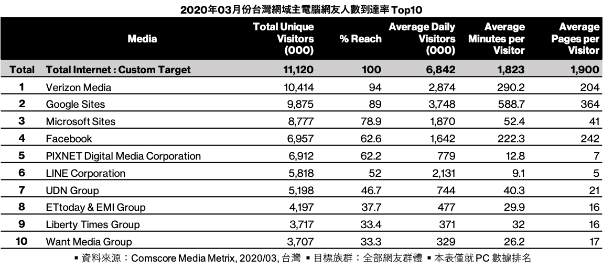
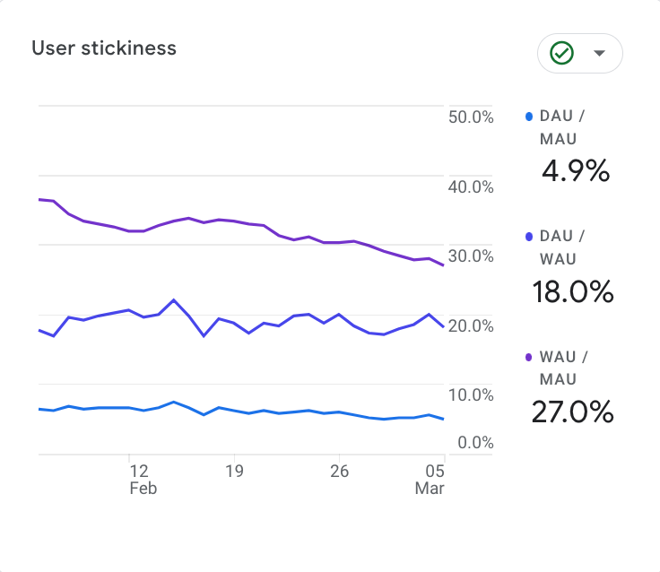
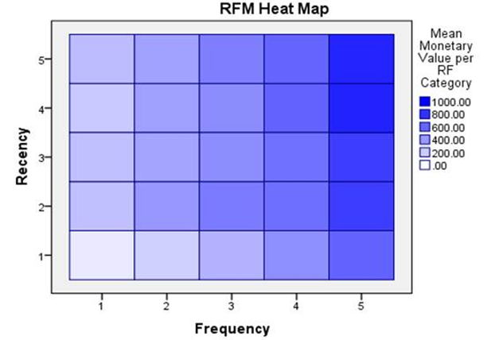

黏著度指標 DAU WAU MAU 與 Frequency
在本單元中，會介紹到達率、每人來幾次、每次看幾頁這三組比值怎麼讀，日活躍與月活躍怎麼算出黏著度，以及一個真實的校園媒體黏著度算出來是什麼樣子。
🎯 學習目標
| # | 你會的能力 | 讓你能解釋的真實問題 |
|---|---|---|
| 1 | 用 DAU、WAU、MAU 算出每週與每月造訪頻率 | 一個網站月活躍 16,724 人，這些人一個月平均來幾次？ |
| 2 | 判斷一個網站的黏著度是「回頭客型」還是「一次客型」 | 為什麼《大學報》的月頻率算出來是 1.03，而這個數字代表什麼？ |
| 3 | 評估一個「先行指標」適不適合當成產品的北極星 | Facebook 說「十天內加七個好友就會留下來」，這句話可以直接搬到你的產品嗎？ |
🤖 課前 AI 互動（10 分鐘，上課前完成）
請利用 AI 當成你的學習助理，請輸入下列提示
請解釋 DAU、WAU、MAU 三個指標，並說明「DAU / MAU」這個比值在業界被拿來當什麼用。接著告訴我，一個內容網站和一個社群 App 的 DAU / MAU 合理區間分別大概是多少，並說明你這個區間的數字是有公開資料支持，還是你的推估。
然後追一句：
如果一個網站的每月造訪頻率算出來是 1.03，這代表什麼？請用一句沒有術語的話說給一個完全不懂分析的人聽。
把它那句「沒有術語的話」抄下來，等一下我們用真實資料驗證它講得對不對。
黏著度的「合理區間」在網路上有非常多版本，多半來自創投的演講或部落格，很少有可以查證的原始資料。AI 通常會直接給你一個看起來很具體的數字（例如「20% 以上算好」）而不標來源。你要的不是那個數字，是它有沒有誠實說自己在推估。
進行方式 ① 三組比值，三個不同的問題
- 黏著度不是一個指標，是三組比值：有多少人、來幾次、每次看多少。
- 三組都是比值，所以每一組都要先問分母是誰。
- 這一段結束你要能講出三組比值各自回答什麼問題。
到達率問的是「市場上有多少人碰過我」
到達率（Reach Rate，也叫滲透率）＝你的月活躍人數 ÷ 整個市場的月活躍人數。

Comscore 的台灣到達率排名：Google 89%、Facebook 62.6%、LINE 52%、聯合報系 46.7%、ETtoday 37.7%。同一張表也給了每人平均分鐘數與每人平均頁數——LINE 到達率 52% 但每人只有 9.1 分鐘，Google 89% 卻有 588.7 分鐘。
到達率單獨看意義不大，它的用處是跟另外兩組比值一起看。到達率高、停留短，代表你是通道；到達率低、停留長，代表你是目的地。
每人來幾次：工作階段 ÷ 使用者
一段時間內，一個使用者來了幾次。內容網站通常越高越好，因為那代表回頭客。
但它通常趨近 1.1——也就是說，大部分的人一個月只來一次。這個數字第一次算出來的時候，多數人會不相信。
每次看幾頁：瀏覽頁次 ÷ 工作階段
一次造訪看了幾頁。這個數字同樣通常趨近 1.1：進來看一篇，走了。
它可以被內部連結和推薦區塊拉高，所以要跟上一節的判準一起看——多的那 0.1 頁，是使用者想看的，還是被絆住的。
每人看幾頁：瀏覽頁次 ÷ 使用者
前兩個比值相乘就是它。中度使用型的網站看這個才有意義——那種每天來、每次看幾頁的產品。
實務上通常會分層設目標：重度、中度、輕度使用者各自該有多少。
進行方式 ② 活躍使用者與造訪頻率
- 活躍使用者是一段時間內至少來過一次的人，常見的窗口是 1、7、14、28 天。
- 造訪頻率＝期間內每日活躍加總 ÷ 該期間的活躍人數。
- 這一段結束你要能自己算出一個真實網站的週頻率與月頻率。
活躍使用者有四種窗口
報表會同時給你 1 日、7 日、14 日、28 日的活躍使用者。窗口拉長，人數一定變多——因為只要在窗口裡出現過一次就算。
常用的三個縮寫：DAU（日活躍）、WAU（週活躍）、MAU（月活躍，通常用 28 天）。
頻率＝把每日的人次加起來，除以不重複的人數
週頻率 = 期間內每日活躍加總 ÷ 週活躍人數。實務上如果只有平均 DAU，就用 平均 DAU × 7 ÷ WAU。
月頻率同理：平均 DAU × 28 ÷ MAU。
這個比值的意思是：一個活躍使用者在這段期間內平均來了幾天。下限是 1（只來一天），上限是窗口長度（天天來）。
黏著度也可以直接看比值

同一件事的另一種寫法。DAU / MAU 4.9% 表示每天回來的人只佔月活躍的二十分之一；WAU / MAU 27% 表示每週回來的人約佔四分之一。這三條線一起往下掉，就是黏著度在流失。
比值和頻率是同一組資訊的兩種呈現。看趨勢用比值，跟人解釋用頻率——「一個月平均來 1.03 天」比「4.9%」好懂。
動手：算出《大學報》的黏著度
政大《大學報》某年 8 月的真實數字：
| 指標 | 數值 |
|---|---|
| 平均 DAU | 617 |
| 平均 WAU | 4,198 |
| MAU（28 天） | 16,724 |
請算出週頻率與月頻率。算完之後，用一句沒有術語的話說明這兩個數字的意思。
原始投影片上的週頻率寫 1.02，用計算器四捨五入會得到 1.03。兩個都對，差別只在進位方式——這種第二位小數的差異在報告裡不必爭，要爭的是它離 1 有多近。
進行方式 ③ 1.03 是什麼意思
- 週頻率與月頻率都算到 1.03 上下，意思是幾乎每一個人都只來一天就消失。
- 同一個月的工作階段頻率是 1.47、只來一次的比例是 90%，兩組數字互相印證。
- 這一段結束你要能對這個結果給出一個不責怪讀者的解釋。
頻率 1.03 的白話是：來過的人幾乎都只來一天
一個月裡有 16,724 個人來過，他們平均只來了 1.03 天。這不是「不夠好」，這是「幾乎沒有回訪」。
高黏著度的網站，月頻率可以到 10 以上；一般網站有 1.1 就很了不起。1.03 在區間的最底部。
使用者頻率與工作階段頻率要分開看
同一個月，《大學報》的工作階段頻率是 1.47，只來一次的比例是 90%。
工作階段頻率一定高於使用者頻率，因為一天之內可以有好幾次工作階段。兩個都要看：使用者頻率低代表沒有回訪，工作階段頻率不低代表來的那一天有多逛幾次。
這個結果不是讀者的問題，是產品形態的問題
校園媒體的內容週期是週報，讀者從搜尋或臉書看到單篇進來，看完就走。在這種形態下，1.03 是結構決定的，不是編輯不努力。
要改變它，得改變產品——固定的更新節奏、訂閱、通知、可累積的東西。這正是上一節那四種「讓工作階段變多」的做法在講的事。
參與度指標也要小心它的分母
參與度常用三個：工作階段時間長度、瀏覽深度、單頁停留時間。
三個都有分母問題：只看一頁的使用者全部被低估（時間記成 0），而單頁停留時間只有兩頁以上的工作階段才算得出來。所以參與度報表其實只描述了「有多逛的那一群人」。
忠誠、頻率、最近一次：RFM 的原型

電子商務常用的分群方式：最近來過而且來得頻繁的那一格（右上角），平均金額最高。
同一組邏輯搬到內容網站，就是「最近有來、而且常來」的那群人最值得經營。分析的價值不在算出一個總數，在於把人分開來看。
進行方式 ④ 先行指標能不能搬
- 業界流傳幾個「神話級」的先行指標：加七個好友、放一個檔案、追蹤幾個人。
- 這些說法多半來自演講與訪談，很少附上可以查證的原始分析。
- 這一段結束你要能判斷一個先行指標搬不搬得到自己的產品上。
幾個被講了十幾年的先行指標
| 產品 | 流傳的說法 |
|---|---|
| 使用者在註冊後 10 天內加到 7 位好友，就有機會持續回訪 | |
| Zynga | 玩家在註冊後隔天還會回來玩，是後續持續遊玩與付費的顯著領先指標 |
| Dropbox | 有沒有在任一裝置放進至少一個檔案 |
| 追蹤一定數量的人之後，有多少比例的人會回追 | |
| 在 Y 天內建立 X 個聯絡人，回訪率會提高 |
這些數字要當成故事聽，不要當成資料用。它們絕大多數出自公司高層的演講或媒體訪談，沒有公開的分析方法、樣本或期間；「7 個好友、10 天」這組數字甚至有好幾個互相矛盾的版本流傳。
它們共同的結構才是可以搬的東西
五個例子的共同點是：找到一個「做過就會留下來」的早期行為，然後把整個產品的力氣壓在讓新使用者做到那件事。
可以搬的是這個結構，不是那個數字。你的產品的那個行為是什麼，只能自己算。
判斷先行指標的三個問題
第一，這個行為是原因還是結果？會加七個好友的人本來就比較投入，那七個好友可能只是投入的證據，不是投入的原因。
第二，你的產品有沒有同樣的機制？Dropbox 放檔案會產生轉換成本，內容網站沒有對應的東西。
第三，你有沒有資料可以驗？沒有辦法自己算出來的先行指標，搬過來就只是信仰。
別人的先行指標是別人算出來的答案。可以抄的是他算的方法，不是他算出來的數字。
⚠️ 迷思攔截
| 常見迷思 | 為什麼太簡化 | 攔截 |
|---|---|---|
| 「到達率高就是影響力大」 | LINE 到達率 52% 但每人只有 9.1 分鐘，Google 89% 有 588.7 分鐘 | 到達率一定要跟停留時間一起看 |
| 「月活躍 16,724 代表有一萬多個常客」 | 月頻率只有 1.03，那一萬多人絕大多數只來過一天 | 看到 MAU 先問頻率 |
| 「頻率 1.03 是因為內容不好」 | 週報型內容從搜尋單篇進站，結構上就很難有回訪 | 先看產品形態，再看內容 |
| 「DAU / MAU 20% 是業界標準」 | 這個數字來自創投演講，沒有公開的跨產業資料支撐 | 用自己的歷史值當比較基準，不要用聽來的門檻 |
| 「加七個好友就會留下來，我們也照做」 | 那可能是投入的結果不是原因，而且沒有公開分析可查 | 抄方法不抄數字 |
| 「參與度指標可以代表所有使用者」 | 只看一頁的人時間記成 0，單頁停留只算得出兩頁以上的 | 它描述的是有多逛的那一群 |
先修與後續
- 先修：流量從哪裡來 Source Medium 與 Channel——來源決定誰進來，這一節看的是他們會不會再來。
- 後續：GA 的帳戶結構與報表地圖——這些指標分別住在哪張報表裡。
- 平行相關：Session 的定義與四種切法——「讓工作階段變多」的四條路，就是改善黏著度的手段。
- 平行相關：A-B 測試與成長分析（W12）——先行指標與北極星指標會在那一節展開成完整的成長分析。
💬 討論／分享／反思
判例演練
請兩人一組，用《大學報》那組數字回答：
- 週頻率與月頻率各是多少
- 如果下個月 MAU 從 16,724 漲到 25,000，但月頻率掉到 1.01，這是好消息還是壞消息
- 如果你要提高月頻率，你會做哪一件事、放棄哪一件事
第 2 題要寫出「兩種讀法」再選一種。
配對分享
請同學兩兩一組，各挑一個自己每天都會打開的 App：
- 說出它讓你回來的那個機制是什麼
- 對方要追問「拿掉那個機制你還會不會回來」
- 判斷那個機制是給你價值，還是製造焦慮
寫下反思
請寫下這一句並補完：
我看到一個很高的月活躍人數時，我會先問＿＿＿，再決定要不要相信它。
小作業
找一個你有後台的帳號（IG、YouTube、部落格都可以），抄下它的日活躍與月活躍（或近似的數字），並寫出：
- 算出月頻率
- 用一句沒有術語的話說明這個數字的意思
- 你的內容形態決定了這個數字的哪一部分——換句話說，哪一部分不是努力就改得動的
學生版｜自教材原始檔產生，更新於 2026-09-10 22:22